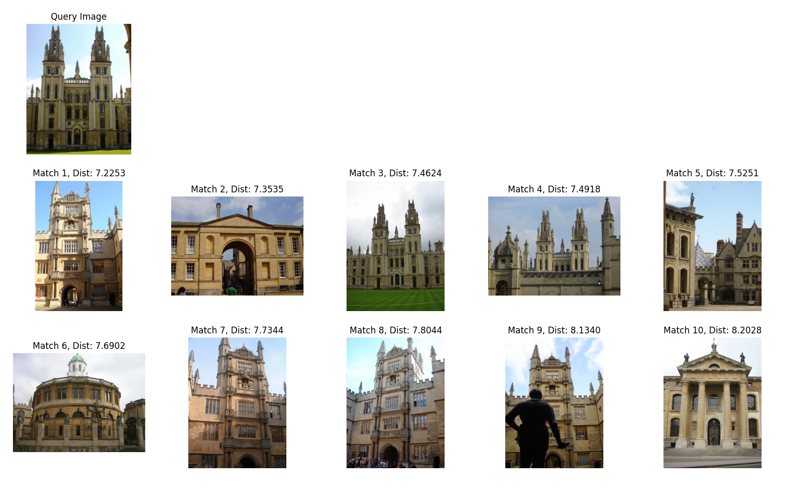
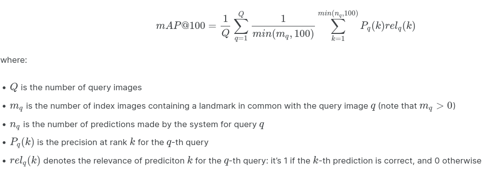

Large scale landmark image retrieval using Siamese networks and AttentionGitHub
Introduction
This project provides a solution to the Google Landmark Retrieval Challenge, which is a computer vision competition hosted by Kaggle where the goal is to develop end-to-end models that are expected to retrieve relevant database images to a given query image. This competition provides the clean version of the Google Landmarks Dataset v2 (GLD-v2) which contains around 1.6 million images with 81,313 landmarks. The dataset is divided into two sets of images: index images and training images. The index images are used to retrieve relevant images for each query image, while the test images are used to train the retrieval models.
Data Preprocessing
As the training dataset was cleaned, there exists missing labels and thus the entire training data was relabeled. For this purpose, a Python script was developed to find the number of unique landmarks (81313) and remap them within that value(0 - 81,312).
Issue 1
Splitting the data randomly as a train and test set may cause some classes to have fewer to no images for training as there exists a varying number of images in each class. A script was developed which randomly selects a small percentage (20%) of the images only from classes with 5 images or more as testing data. These numbers were obtained after some hyperparameter tuning.
Since Siamese models require a pair of images as input along with their similarity label (1 if they have the same labels and 0 if not), new data was generated from the classification data of landmarks provided in the challenge.
Issue 2
Same image pairs cannot be used in every epoch as the model would only learn similarities between the same pairs which will lead to overfitting. Thus the training script was modified to generate a new set of similar and dissimilar image pairs in every epoch thereby solving this issue.
Model Selection
Siamese models were used in this case as these models as these can effectively learn discriminative feature representations can which are then used to measure the similarity or distance between pairs or triplets of images based on their visual content.
The attention module further improves the Siamese networks by extracting local features from the images and refining them by weighted pooling, which allows the networks to output robust representations for noisy images and achieve better retrieval performance. These mechanisms can also be used to directly compare a query image and a retrieved candidate on a pixel level, which can capture fine-grained details and improve the ranking accuracy.
Model development
TensorFlow was used as the ML framework for model development. The ResNet-101 was used as the backbone model for the sub-network which was then coupled with four different attention modules separately- Spatial, channel, Squeeze and Excitation (SE), and Convolutional Block Attention Module (CBAM).
Spatial attention module
Based on the “Learn to Pay Attention” paper by Jetley et al. (2018), the spatial attention module uses an attention mechanism that takes outputs of each residual block and Global Average Pooling to produce attention-weighted feature maps. The outputs from all the attention layers were concatenated to get a single feature vector.
Convolutional Block Attention Module (CBAM)
Given an intermediate feature map, CBAM sequentially infers attention maps along two separate dimensions, channel and spatial, which are then multiplied to the input feature map for adaptive feature refinement. CBAM is a lightweight and general module that can be integrated into any CNN architecture seamlessly with negligible overheads and is end-to-end trainable along with base CNNs.
Squeeze and Excitation (SE) module
A squeeze-and-excitation block is a way of enhancing the features learned by CNNs by using a small network to learn how important each feature channel is for a given input and then adjusting the feature channels by multiplying them with the learned importance weights. This way, the network can focus on the most relevant features and suppress the less useful ones.
Channel attention module
Channel attention is a technique that aims to enhance the feature representation of convolutional neural networks by exploiting the inter-channel relationship of feature maps. The channel attention implemented here is loosely based on the channel attention used in CBAM which determines attention-weighted feature maps along the channel dimension which are then passed through a dense layer for further feature refinement.
Ensemble model
Different ensembles of the above models were experimented with to improve the Siamese network. The outputs of each model in the ensemble were concatenated to form a more descriptive feature vector for image similarity comparison.
Loss function and optimizer
The contrastive loss was used as the loss function as it is a distance-based loss that aims to bring similar examples closer together in the embedding space while pushing dissimilar examples farther apart. This is achieved by minimizing the distance between embeddings of positive (similar) pairs and ensuring that the distance between embeddings of negative (dissimilar) pairs is larger than a predefined margin.
Adam optimizer was used as it is based on adaptive moment estimation, which means it adjusts the learning rate for each weight according to the gradient statistics. It is efficient, robust, and easy to use.
Model Training
The model was trained using the P100 GPUs made available in the Northeastern HPC Discovery Cluster. The contrastive loss was selected as the objective function and Adam as the optimizer with the learning rate of 1x10-3 for feature extraction. The margin for contrastive loss is set to 10 after some hyperparameter tuning for the model to be more flexible in bringing together and separating the high-dimensional feature vectors of similar and dissimilar images.
Issue 3
Since the validation set is large, computing the validation accuracy at the end of every batch is not feasible. Hence, a callback was developed to sample a small mini-batch of size 256 at random from the validation set after the end of every batch to compute validation accuracy, and the training is stopped when the difference in validation accuracy of the latest and previous batch is less than 1x10-4
Visualizing the retrieval results
The retrieval results of the top 10 similar images along with the similarity distance (L2 distance) produced by some of the above Siamese networks are shown below.

Evaluation Results
Evaluation Metric
The evaluation metric used is the same as the competition metric i.e. mean Average Precesion@100 (mAP@100), which measures the quality of the top 100 ranked retrieval results.
Evaluation Process
For evaluation, Revisited Oxford and Paris benchmark were used as it provides more reliable annotation, larger size, and higher challenge levels. It also introduces new queries and compares different methods on the new benchmark, showing that image retrieval is still an open problem.
An evaluation script was developed based on the evaluation script used in GLDv2.
Issue 4
Siamese networks are pretty slow in finding the best set of similar images during inference time as the model generates the same set of feature vectors for index images for every input query image. Feature vectors for all the index images were generated once and stored in the “.npy” format, after passing the images through the Siamese subnetwork. Thus during inference time, only the feature vector of the input query image needs to be generated and L2 distances is calculated between the query feature vector and the previously stored feature vectors of the index images.
Results
These were the results obtained after evaluating all the Siamese models. The ensemble of Spatial + CBAM + SE attention achieved the highest mAP.
The below table summarizes the mAP obtained after coupling ResNet-101 with different attention modules indivitually.
| Attention module | mAP |
|---|---|
| Spatial | 9.96 |
| Channel | 10.72 |
| CBAM | 11.36 |
| SE | 11.89 |
The below table summarizes the mAP obtained after coupling ResNet-101 with different ensemble of attention modules.
| Attention module | mAP |
|---|---|
| SE + CBAM | 13.02 |
| SE + CBAM + Spatial + Channel | 13.35 |
| SE + CBAM + Spatial | 16.29 |